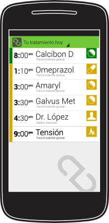
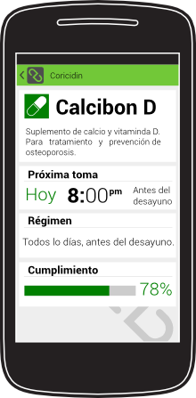
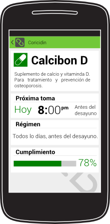
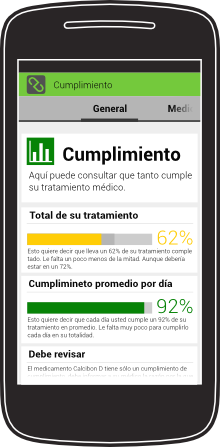
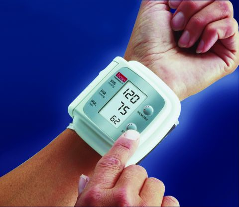

Una aplicación para un tratamiento médico inteligente
Iniciemos por el problema...
Un tratamiento médico es un conjunto de medios necesarios para curarte o aliviarte de una enfermedad
Según la OMS:
" ...más del 50% de las personas con una enfermedad crónica no cumplen el tratamiento"
Sigue la OMS:
"El incumplimiento terapeútico es un problema de salud pública de primera magnitud"
¿ Qué provoca no cumplir el tratamiento ?
Empeoramiento de la calidad de vida
El tratamiento será menos efectivo
Menos control de la enfermedad
Mayor posibilidad de fallecimiento
...entre otros.
Si es tan malo...
¿ A qué se debe que alguien no cumpla su tratamiento ?
" Lo he olvidado... "
En tratamientos con muchos medicamentos hay mayor riesgo de olvido y de cansarse del cumplimiento
" No sé para qué es esto... "
Cuando un paciente no comprende su tratamiento tiende a no cumplirlo.
" Mi médico ya se habrá olvidado de mi..."
Poca integración entre el médico y el paciente también lleva al incumplimiento del tratamiento
Revisemos una solución para esto...
Necesitamos algo que...
...Nos recuerde el tratamiento
...Tenga la información del tratamiento
...Nos integre con nuestro médico
...que no nos moleste llevar
...ni que debamos recordar llevar
Esto último nos hace pensar en...
¿Que tal si su móvil le recordara su tratamiento en su día a día?
Tu Salud le mostrará que debe realizar cada día

...y no sólo eso
Su móvil emitirá un recordatorio cuando deba tomar algún medicamento o cuando tenga una cita cercana
¿Que tal si su móvil tuviera todo su tratamiento médico?
Tu Salud cotendrá la información general sobre su tratamiento
...y no sólo eso
 

Podrá contener cada detalle de sus medicamentos, terapias, dietas y otros medios que necesite.
¿ Qué tal si su móvíl le informara sobre como lleva su tratamiento?
Con esta información Tu Salud le mostará estadísticas sobre el cumplimiento de su tratamiento
Algunas patologias requieren que el paciente se realize revisiones en casa y las anoté en algún lugar para mostrárselo a su doctor
¿ Por qué no hacerlo en su móvil ?
En Tu Salud podrá anotar estas revisiones
¿ Y si su médico conociera toda esta información...
...antes de su próxima cita ?
Tu Salud podrá enviar en forma de reporte como usted ha seguido su tratamiento y revisiones que se haya realizado

Mi visión es que su médico coloque todo su tratamiento mediante una aplicación para ellos en sus computadoras
Si usted es médico piense en una aplicacion para usted...
Donde gestione los tratamientos médicos de sus pacientes
Que le permita enviar estos a los móviles de sus pacientes
Donde reciba reportes de seguimiento de estos de sus pacientes
Tu Salud es, por el momento, sólo una idea, un concepto...
...concepto que desarrollo en mi trabajo de grado para para optar a mi título de Ingeniero en Informática
Carlos Pinelly
cpinelly@gmail.com
@capicp
0414-899.29.42